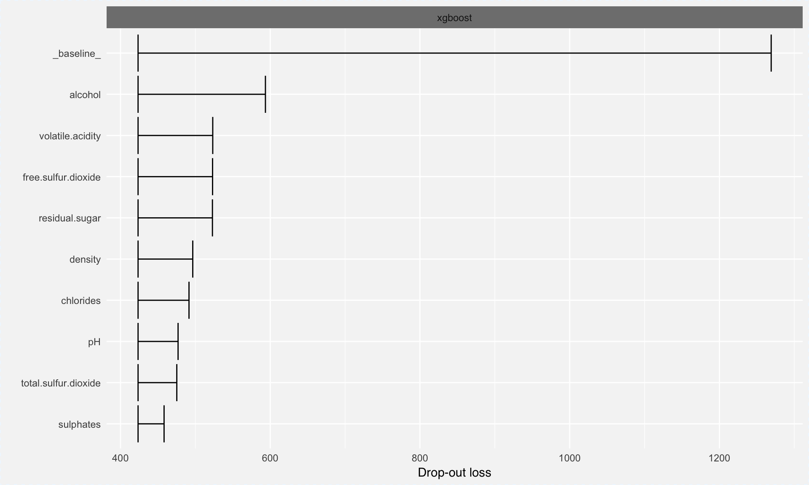

How to use DALEX with the xgboost models
Przemyslaw Biecek
2018-03-17
This vigniette demonstrates how to use the DALEX package with models created with the xgboost package.
Regression
In this example we are going to use the wine dataset from the breakDown package. The wine quality will be predicted based on other features.
library("breakDown")
head(wine)
#> fixed.acidity volatile.acidity citric.acid residual.sugar chlorides
#> 1 7.0 0.27 0.36 20.7 0.045
#> 2 6.3 0.30 0.34 1.6 0.049
#> 3 8.1 0.28 0.40 6.9 0.050
#> 4 7.2 0.23 0.32 8.5 0.058
#> 5 7.2 0.23 0.32 8.5 0.058
#> 6 8.1 0.28 0.40 6.9 0.050
#> free.sulfur.dioxide total.sulfur.dioxide density pH sulphates alcohol
#> 1 45 170 1.0010 3.00 0.45 8.8
#> 2 14 132 0.9940 3.30 0.49 9.5
#> 3 30 97 0.9951 3.26 0.44 10.1
#> 4 47 186 0.9956 3.19 0.40 9.9
#> 5 47 186 0.9956 3.19 0.40 9.9
#> 6 30 97 0.9951 3.26 0.44 10.1
#> quality
#> 1 6
#> 2 6
#> 3 6
#> 4 6
#> 5 6
#> 6 6Model building
Let’s build a model. We need to prepare xgb.DMatrix first.
library("xgboost")
model_martix_train <- model.matrix(quality ~ . - 1, wine)
data_train <- xgb.DMatrix(model_martix_train, label = wine$quality)
param <- list(max_depth = 2, eta = 1, silent = 1, nthread = 2,
objective = "reg:linear")
wine_xgb_model <- xgb.train(param, data_train, nrounds = 50)
wine_xgb_model
#> ##### xgb.Booster
#> raw: 20 Kb
#> call:
#> xgb.train(params = param, data = data_train, nrounds = 50)
#> params (as set within xgb.train):
#> max_depth = "2", eta = "1", silent = "1", nthread = "2", objective = "reg:linear", silent = "1"
#> xgb.attributes:
#> niter
#> callbacks:
#> cb.print.evaluation(period = print_every_n)
#> niter: 50Explainer
Now we can create an explainer.
library("DALEX")
explainer_xgb <- explain(wine_xgb_model,
data = model_martix_train,
y = wine$quality,
label = "xgboost")
explainer_xgb
#> Model label: xgboost
#> Model class: xgb.Booster
#> Data head :
#> fixed.acidity volatile.acidity citric.acid residual.sugar chlorides
#> 1 7.0 0.27 0.36 20.7 0.045
#> 2 6.3 0.30 0.34 1.6 0.049
#> free.sulfur.dioxide total.sulfur.dioxide density pH sulphates alcohol
#> 1 45 170 1.001 3.0 0.45 8.8
#> 2 14 132 0.994 3.3 0.49 9.5Single variable
For continouse variable
sv_xgb_satisfaction_level <- single_variable(explainer_xgb,
variable = "alcohol",
type = "pdp")
head(sv_xgb_satisfaction_level)
#> x y var type label
#> 1 8.000 5.133578.... alcohol pdp xgboost
#> 2 8.124 5.133578.... alcohol pdp xgboost
#> 3 8.248 5.133578.... alcohol pdp xgboost
#> 4 8.372 5.133578.... alcohol pdp xgboost
#> 5 8.496 5.133578.... alcohol pdp xgboost
#> 6 8.620 5.133578.... alcohol pdp xgboost
plot(sv_xgb_satisfaction_level)
Single prediction
nobs <- model_martix_train[1, , drop = FALSE]
sp_xgb <- single_prediction(explainer_xgb,
observation = nobs)
head(sp_xgb)
#> variable contribution variable_name
#> 1 (Intercept) 0.000000000 Intercept
#> residual.sugar + residual.sugar = 20.7 0.332048412 residual.sugar
#> fixed.acidity + fixed.acidity = 7 0.024627606 fixed.acidity
#> citric.acid + citric.acid = 0.36 -0.003545152 citric.acid
#> pH + pH = 3 -0.001893453 pH
#> chlorides + chlorides = 0.045 -0.015601129 chlorides
#> variable_value cummulative sign position label
#> 1 1 0.0000000 0 1 xgboost
#> residual.sugar 20.7 0.3320484 1 2 xgboost
#> fixed.acidity 7 0.3566760 1 3 xgboost
#> citric.acid 0.36 0.3531309 -1 4 xgboost
#> pH 3 0.3512374 -1 5 xgboost
#> chlorides 0.045 0.3356363 -1 6 xgboost
plot(sp_xgb)
Variable importance
vd_xgb <- variable_dropout(explainer_xgb, type = "raw")
head(vd_xgb)
#> variable dropout_loss label
#> 1 _full_model_ 382.4561 xgboost
#> 2 fixed.acidity 401.1067 xgboost
#> 3 citric.acid 412.8188 xgboost
#> 4 total.sulfur.dioxide 412.9705 xgboost
#> 5 sulphates 418.7446 xgboost
#> 6 pH 422.1842 xgboost
plot(vd_xgb)
Classification
In this example we are going to use the HR_data dataset from the breakDown package. The model will predict odds that someone will leave the company.
library("breakDown")
head(HR_data)
#> satisfaction_level last_evaluation number_project average_montly_hours
#> 1 0.38 0.53 2 157
#> 2 0.80 0.86 5 262
#> 3 0.11 0.88 7 272
#> 4 0.72 0.87 5 223
#> 5 0.37 0.52 2 159
#> 6 0.41 0.50 2 153
#> time_spend_company Work_accident left promotion_last_5years sales salary
#> 1 3 0 1 0 sales low
#> 2 6 0 1 0 sales medium
#> 3 4 0 1 0 sales medium
#> 4 5 0 1 0 sales low
#> 5 3 0 1 0 sales low
#> 6 3 0 1 0 sales lowModel building
Let’s build a model. We need to prepare xgb.DMatrix first.
library("xgboost")
model_martix_train <- model.matrix(left ~ . - 1, HR_data)
data_train <- xgb.DMatrix(model_martix_train, label = HR_data$left)
param <- list(max_depth = 2, eta = 1, silent = 1, nthread = 2,
objective = "binary:logistic", eval_metric = "auc")
HR_xgb_model <- xgb.train(param, data_train, nrounds = 50)
HR_xgb_model
#> ##### xgb.Booster
#> raw: 19.4 Kb
#> call:
#> xgb.train(params = param, data = data_train, nrounds = 50)
#> params (as set within xgb.train):
#> max_depth = "2", eta = "1", silent = "1", nthread = "2", objective = "binary:logistic", eval_metric = "auc", silent = "1"
#> xgb.attributes:
#> niter
#> callbacks:
#> cb.print.evaluation(period = print_every_n)
#> niter: 50Explainer
Now we can create an explainer.
library("DALEX")
predict_logit <- function(model, x) {
raw_x <- predict(model, x)
exp(raw_x)/(1 + exp(raw_x))
}
logit <- function(x) exp(x)/(1+exp(x))
explainer_xgb <- explain(HR_xgb_model,
data = model_martix_train,
y = HR_data$left,
predict_function = predict_logit,
link = logit,
label = "xgboost")
explainer_xgb
#> Model label: xgboost
#> Model class: xgb.Booster
#> Data head :
#> satisfaction_level last_evaluation number_project average_montly_hours
#> 1 0.38 0.53 2 157
#> 2 0.80 0.86 5 262
#> time_spend_company Work_accident promotion_last_5years salesaccounting
#> 1 3 0 0 0
#> 2 6 0 0 0
#> saleshr salesIT salesmanagement salesmarketing salesproduct_mng
#> 1 0 0 0 0 0
#> 2 0 0 0 0 0
#> salesRandD salessales salessupport salestechnical salarylow salarymedium
#> 1 0 1 0 0 1 0
#> 2 0 1 0 0 0 1Single variable
For continouse variable
sv_xgb_satisfaction_level <- single_variable(explainer_xgb,
variable = "satisfaction_level",
type = "pdp")
head(sv_xgb_satisfaction_level)
#> x y var type label
#> 1 0.0900 0.8987094 satisfaction_level pdp xgboost
#> 2 0.1082 0.8987094 satisfaction_level pdp xgboost
#> 3 0.1264 0.2054395 satisfaction_level pdp xgboost
#> 4 0.1446 0.2531582 satisfaction_level pdp xgboost
#> 5 0.1628 0.1489797 satisfaction_level pdp xgboost
#> 6 0.1810 0.1489797 satisfaction_level pdp xgboost
plot(sv_xgb_satisfaction_level)
Single prediction
nobs <- model_martix_train[1, , drop = FALSE]
sp_xgb <- single_prediction(explainer_xgb,
observation = nobs)
head(sp_xgb)
#> variable contribution
#> 1 (Intercept) 0.000000e+00
#> time_spend_company + time_spend_company = 3 -1.345254e-02
#> salarymedium + salarymedium = 0 -1.150067e-03
#> salessupport + salessupport = 0 -1.972958e-04
#> salestechnical + salestechnical = 0 -1.505909e-04
#> saleshr + saleshr = 0 -9.573981e-05
#> variable_name variable_value cummulative sign
#> 1 Intercept 1 0.00000000 0
#> time_spend_company time_spend_company 3 -0.01345254 -1
#> salarymedium salarymedium 0 -0.01460261 -1
#> salessupport salessupport 0 -0.01479990 -1
#> salestechnical salestechnical 0 -0.01495049 -1
#> saleshr saleshr 0 -0.01504623 -1
#> position label
#> 1 1 xgboost
#> time_spend_company 2 xgboost
#> salarymedium 3 xgboost
#> salessupport 4 xgboost
#> salestechnical 5 xgboost
#> saleshr 6 xgboost
plot(sp_xgb)
Variable importance
vd_xgb <- variable_dropout(explainer_xgb, type = "raw")
head(vd_xgb)
#> variable dropout_loss label
#> 1 _full_model_ 218.7678 xgboost
#> 2 promotion_last_5years 218.7118 xgboost
#> 3 salarymedium 218.7372 xgboost
#> 4 saleshr 218.7585 xgboost
#> 5 salesaccounting 218.7678 xgboost
#> 6 salesIT 218.7678 xgboost
plot(vd_xgb)Session info
devtools::session_info()
#> setting value
#> version R version 3.4.3 (2017-11-30)
#> system x86_64, darwin15.6.0
#> ui X11
#> language (EN)
#> collate en_US.UTF-8
#> tz Europe/Warsaw
#> date 2018-03-17
#>
#> package * version date source
#> agricolae 1.2-8 2017-09-12 cran (@1.2-8)
#> ALEPlot 1.0 2017-11-13 CRAN (R 3.4.2)
#> AlgDesign 1.1-7.3 2014-10-15 CRAN (R 3.2.0)
#> assertthat 0.2.0 2017-04-11 CRAN (R 3.4.0)
#> backports 1.1.1 2017-09-25 CRAN (R 3.4.2)
#> base * 3.4.3 2017-12-07 local
#> bindr 0.1 2016-11-13 CRAN (R 3.4.0)
#> bindrcpp 0.2 2017-06-17 CRAN (R 3.4.0)
#> boot 1.3-20 2017-08-06 CRAN (R 3.4.3)
#> breakDown * 0.1.5 2018-03-17 local (pbiecek/breakDown@NA)
#> cluster 2.0.6 2017-03-10 CRAN (R 3.4.3)
#> coda 0.19-1 2016-12-08 cran (@0.19-1)
#> colorspace 1.3-2 2016-12-14 CRAN (R 3.4.0)
#> combinat 0.0-8 2012-10-29 CRAN (R 3.1.0)
#> compiler 3.4.3 2017-12-07 local
#> DALEX * 0.1.8 2018-03-17 local (pbiecek/DALEX@NA)
#> data.table 1.10.4-3 2017-10-27 CRAN (R 3.4.2)
#> datasets * 3.4.3 2017-12-07 local
#> deldir 0.1-14 2017-04-22 cran (@0.1-14)
#> devtools 1.13.5 2018-02-18 CRAN (R 3.4.3)
#> digest 0.6.15 2018-01-28 cran (@0.6.15)
#> dplyr 0.7.4 2017-09-28 CRAN (R 3.4.2)
#> evaluate 0.10.1 2017-06-24 CRAN (R 3.4.1)
#> expm 0.999-2 2017-03-29 cran (@0.999-2)
#> factorMerger 0.3.5 2018-02-21 local (geneticsMiNIng/FactorMerger@NA)
#> gdata 2.17.0 2015-07-04 CRAN (R 3.2.0)
#> ggplot2 2.2.1 2016-12-30 CRAN (R 3.4.0)
#> ggpubr 0.1.6 2017-11-14 cran (@0.1.6)
#> glue 1.2.0 2017-10-29 cran (@1.2.0)
#> gmodels 2.16.2 2015-07-22 CRAN (R 3.4.0)
#> graphics * 3.4.3 2017-12-07 local
#> grDevices * 3.4.3 2017-12-07 local
#> grid 3.4.3 2017-12-07 local
#> gridExtra 2.3 2017-09-09 CRAN (R 3.4.1)
#> gtable 0.2.0 2016-02-26 CRAN (R 3.2.3)
#> gtools 3.5.0 2015-05-29 CRAN (R 3.2.0)
#> htmltools 0.3.6 2017-04-28 CRAN (R 3.4.0)
#> klaR 0.6-12 2014-08-06 CRAN (R 3.2.0)
#> knitr 1.20 2018-02-20 cran (@1.20)
#> labeling 0.3 2014-08-23 CRAN (R 3.2.2)
#> lattice 0.20-35 2017-03-25 CRAN (R 3.4.3)
#> lazyeval 0.2.0 2016-06-12 CRAN (R 3.4.0)
#> LearnBayes 2.15 2014-05-29 CRAN (R 3.2.0)
#> magrittr 1.5 2014-11-22 CRAN (R 3.2.2)
#> MASS 7.3-47 2017-02-26 CRAN (R 3.4.3)
#> Matrix 1.2-12 2017-11-15 CRAN (R 3.4.2)
#> memoise 1.1.0 2017-04-21 CRAN (R 3.4.0)
#> methods * 3.4.3 2017-12-07 local
#> munsell 0.4.3 2016-02-13 CRAN (R 3.2.3)
#> mvtnorm 1.0-7 2018-01-25 cran (@1.0-7)
#> nlme 3.1-131 2017-02-06 CRAN (R 3.4.3)
#> pdp 0.6.0 2017-07-20 CRAN (R 3.4.1)
#> pillar 1.1.0 2018-01-14 cran (@1.1.0)
#> pkgconfig 2.0.1 2017-03-21 CRAN (R 3.4.0)
#> plyr 1.8.4 2016-06-08 CRAN (R 3.4.0)
#> proxy 0.4-21 2018-01-04 cran (@0.4-21)
#> R6 2.2.2 2017-06-17 CRAN (R 3.4.0)
#> RColorBrewer 1.1-2 2014-12-07 CRAN (R 3.2.2)
#> Rcpp 0.12.15 2018-01-20 cran (@0.12.15)
#> reshape2 1.4.3 2017-12-11 cran (@1.4.3)
#> rlang 0.2.0 2018-02-20 CRAN (R 3.4.3)
#> rmarkdown 1.8 2017-11-17 cran (@1.8)
#> rprojroot 1.2 2017-01-16 CRAN (R 3.4.0)
#> scales 0.5.0 2017-08-24 CRAN (R 3.4.1)
#> sp 1.2-5 2017-06-29 cran (@1.2-5)
#> spData 0.2.6.4 2017-11-12 cran (@0.2.6.4)
#> spdep 0.7-4 2017-11-22 cran (@0.7-4)
#> splines 3.4.3 2017-12-07 local
#> stats * 3.4.3 2017-12-07 local
#> stringi 1.1.6 2017-11-17 cran (@1.1.6)
#> stringr 1.3.0 2018-02-19 cran (@1.3.0)
#> survival 2.41-3 2017-04-04 CRAN (R 3.4.3)
#> tibble 1.4.2 2018-01-22 cran (@1.4.2)
#> tools 3.4.3 2017-12-07 local
#> utils * 3.4.3 2017-12-07 local
#> withr 2.1.0 2017-11-01 cran (@2.1.0)
#> xgboost * 0.6-4 2017-01-05 cran (@0.6-4)
#> yaImpute 1.0-29 2017-12-10 CRAN (R 3.4.3)
#> yaml 2.1.16 2017-12-12 cran (@2.1.16)